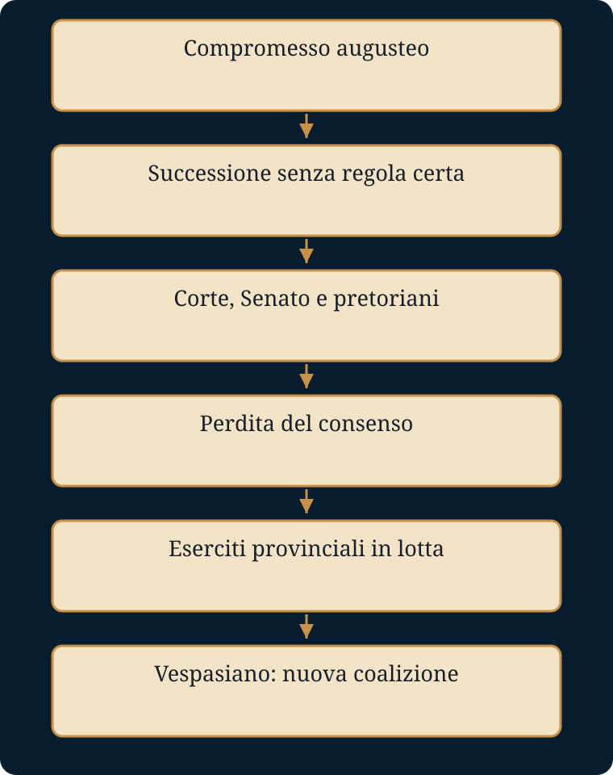

Chi decide chi governa quando manca una regola sicura di successione?
Luoghi e tempi. Roma, Capri e le province: Reno e Danubio, Gallia, Spagna, Siria, Giudea, Egitto. Nel 69 il controllo delle province decide il potere nella capitale.
- Mondo precedente
- Il compromesso augusteo conserva le istituzioni ma concentra le risorse decisive nel principe.
- Fratture
- Congiure, conflitti di corte e perdita del consenso rendono instabile il passaggio del potere.
- Attori e conflitti
- Famiglia imperiale, Senato, liberti, pretoriani, plebe ed eserciti provinciali hanno interessi differenti.
- Processo e cause
- Le risorse militari e fiscali delle province consentono ai comandanti di contendere la porpora.
- Conseguenze
- Il 69 rende visibile la possibilità di creare un imperatore fuori Roma.
- Risposta alla domanda
- Non decide un unico soggetto: prevale chi unisce eserciti, risorse e riconoscimento politico.
La dispensa integrale
Testo originale di gbprof e Libera, comprese le attività e le tabelle. Le sezioni introduttiva e conclusiva di questa pagina sono strumenti aggiunti. Scarica il Word originale.
IL POTERE E IL SANGUE
Dalla morte di Cesare all’anno dei quattro imperatori
Racconto storico per gli studenti
Roma, 44 a.C. – 69 d.C.
Dispensa didattica a cura di gbprof e Libera
Nota di lettura. Questo testo trasforma in racconto la vicenda politica della prima età imperiale. Non inventa dialoghi decisivi né pensieri segreti dei protagonisti. Quando le fonti antiche sono ostili, leggendarie o discordi, il racconto lo segnala apertamente. L’obiettivo non è rendere il passato più teatrale di quanto sia stato, ma restituirgli movimento senza perdere il controllo storico.
COME USARE QUESTA DISPENSA
PERCORSO DI STUDIO Leggi il racconto senza interrompere il filo narrativo • Ripassa i saperi irrinunciabili • Impara il vocabolario nel suo contesto • Ricostruisci lo schema causale • Rispondi alle domande con frasi argomentate
Il racconto storico è conservato integralmente. Gli strumenti didattici aggiunti non lo sostituiscono: servono a trasformare la lettura in comprensione, confronto e rielaborazione personale.
Prologo — Una Repubblica troppo grande
«Avevano ucciso Cesare, ma non la necessità politica che lo aveva prodotto.»
Nel I secolo a.C. Roma continuava a chiamarsi Repubblica, ma non era più la città-stato che aveva costruito le proprie istituzioni nei secoli antichi. Le sue legioni combattevano dalla Spagna alla Siria; i governatori amministravano province lontane; immense ricchezze affluivano verso l’Italia; centinaia di migliaia di schiavi lavoravano nelle campagne e nelle case. Eppure il potere continuava a essere distribuito attraverso magistrature annuali, collegiali e pensate per una comunità molto più piccola. Il sistema non era semplicemente vecchio: era sottoposto a una pressione che non riusciva più a governare.
In teoria nessun uomo avrebbe dovuto concentrare a lungo il comando militare. In pratica, le guerre richiedevano generali capaci di guidare eserciti per anni. Quegli eserciti finivano per legarsi ai comandanti che promettevano terre, denaro e protezione. Mario, Silla, Pompeo e Cesare non distrussero da soli la Repubblica: furono anche il prodotto di una trasformazione che aveva spostato il centro reale del potere dalle assemblee cittadine alle province e agli accampamenti.
Gaio Giulio Cesare comprese con straordinaria lucidità che Roma non poteva più governare il Mediterraneo come una città dominata da poche famiglie senatorie. Dopo la vittoria nella guerra civile, aumentò il numero dei senatori, introdusse nell’assemblea uomini provenienti dall’Italia e dalle province occidentali, riformò il calendario, intervenne sui debiti, fondò colonie e distribuì terre ai veterani. Ma nello stesso tempo raccolse nelle proprie mani poteri sempre più vasti. Quando nel 44 a.C. ricevette la dittatura perpetua, la sua posizione apparve a molti incompatibile con la libertas della nobiltà romana.
La libertas invocata dai congiurati non coincideva con la libertà moderna. Era soprattutto il diritto dell’aristocrazia di competere per le magistrature, discutere in Senato e non dipendere dalla clemenza di un solo uomo. Il 15 marzo del 44 a.C., nella curia presso il teatro di Pompeo, Cesare fu circondato e colpito. I congiurati credettero di aver eliminato il tiranno e salvato la Repubblica. Avevano invece eliminato l’uomo senza risolvere la crisi che lo aveva reso possibile.
La morte di Cesare aprì una nuova stagione di vendette e guerre. Ottaviano, il giovane erede adottivo, Marco Antonio e Lepido formarono nel 43 a.C. il secondo triumvirato, una magistratura straordinaria riconosciuta dalla legge. Le proscrizioni colpirono avversari politici e patrimoni; Cicerone, che aveva sperato di usare Ottaviano contro Antonio, fu ucciso. A Filippi, nel 42 a.C., Bruto e Cassio furono sconfitti. Poi anche i triumviri si divisero. La lotta finale oppose Ottaviano e Antonio, ormai legato politicamente e personalmente a Cleopatra. La vittoria navale di Azio, nel 31 a.C., lasciò Ottaviano solo al vertice del mondo romano.
Aveva vinto. Ma sapeva che non poteva presentarsi come re. A Roma il titolo di rex restava odioso, e la memoria dell’assassinio di Cesare era ancora vicina. Ottaviano scelse quindi una strada più prudente: non abolì la Repubblica, la svuotò gradualmente della capacità di opporsi al suo primato. Conservò il Senato, i consoli, i comizi, le magistrature. Fece però in modo che le forze decisive — esercito, province strategiche, iniziativa politica, prestigio religioso — convergessero nella sua persona.
STRUMENTI PER LO STUDIO
SAPERI IRRINUNCIABILI L’espansione mediterranea rese insufficienti gli equilibri della città-stato • Gli eserciti legati ai comandanti favorirono i grandi capi militari • Cesare concentrò poteri eccezionali e fu ucciso nel 44 a.C. • Ottaviano vinse le guerre civili ma evitò il titolo di re
VOCABOLARIO ESSENZIALE imperium: comando civile e militare | libertas: autonomia politica dell’aristocrazia repubblicana | dittatura perpetua: dittatura senza limite temporale | triumvirato: accordo e magistratura straordinaria di tre uomini
SCHEMA LOGICO espansione di Roma → crisi delle istituzioni • eserciti personali → guerre civili • dittatura di Cesare → congiura • vittoria di Ottaviano → ricerca di una forma nuova di potere
DOMANDE APERTE DI COMPRENSIONE
1. Perché le istituzioni repubblicane entrarono in crisi con l’espansione di Roma?
2. In che senso la libertas dei congiurati non coincide con la libertà moderna?
3. Perché Ottaviano non poteva presentarsi apertamente come re?
1. Augusto — Il vincitore che restituì la Repubblica
Nel gennaio del 27 a.C. Ottaviano entrò in Senato e dichiarò di restituire al Senato e al popolo romano il governo dello Stato. Il gesto fu solenne, ma non fu una semplice rinuncia. I senatori gli affidarono il controllo delle province nelle quali si trovava la maggior parte delle legioni e gli concessero il titolo di Augustus, parola dal valore religioso, capace di evocare grandezza e protezione divina. Da quel momento egli non fu ufficialmente un re: fu il princeps, il primo tra i cittadini.
L’equilibrio non nacque in un solo giorno. Nel 23 a.C., dopo una crisi politica e personale, Augusto rinunciò al consolato annuale ma ricevette in forma stabile la potestà tribunizia, che gli permetteva di proporre leggi, convocare il Senato e intervenire a difesa dei cittadini. Il suo imperium proconsolare gli garantiva il comando nelle province militari e una posizione superiore rispetto agli altri governatori. Le antiche magistrature rimanevano in piedi, ma nessun magistrato disponeva di un insieme di risorse paragonabile al suo.
Augusto descrisse il proprio potere con una formula accurata: non sosteneva di possedere più potestas dei colleghi nelle singole cariche, ma di superarli tutti per auctoritas. Era una verità e insieme una costruzione politica. L’auctoritas comprendeva il prestigio del vincitore delle guerre civili, il controllo degli eserciti, l’immensa ricchezza, la protezione dei veterani, la rete familiare e il carattere quasi sacro assunto dalla sua figura. Non serviva impartire continuamente ordini: spesso bastava che fosse noto il suo desiderio.
Roma usciva da decenni di violenza. Per molti cittadini la pace valeva più della competizione politica dell’antica aristocrazia. Le porte del tempio di Giano furono chiuse per indicare la fine delle guerre; le strade furono rese più sicure; le province vennero amministrate con maggiore regolarità; l’esercito divenne una forza professionale stabile. Augusto ridusse e disciplinò le legioni, organizzò il congedo dei veterani e istituì un tesoro militare. La pace augustea non significò assenza di guerre, ma fine delle guerre civili nel cuore dello Stato.
Il principe intervenne anche nella vita sociale e religiosa. Restaurò templi, rilanciò culti tradizionali, promosse leggi sul matrimonio e sull’adulterio, presentandosi come difensore del mos maiorum. Ma la sua politica morale entrò tragicamente nella casa imperiale: la figlia Giulia fu esiliata per adulterio. L’uomo che voleva disciplinare Roma non riusciva a trasformare la propria famiglia in un modello perfetto.
Il problema più difficile era la successione. Il Principato non era giuridicamente una monarchia ereditaria, ma nessuno poteva immaginare che alla morte di Augusto il potere tornasse davvero libero. Il principe cercò a lungo un successore nella propria famiglia: prima Marcello, poi Agrippa, poi i giovani Gaio e Lucio Cesare. Tutti morirono prima di lui. Alla fine adottò Tiberio, figlio di Livia, uomo esperto e ottimo comandante, ma legato ad Augusto da un rapporto spesso freddo e tormentato.
Nel 14 d.C., Augusto morì a Nola. La tradizione gli attribuì una domanda teatrale: se avesse recitato bene la commedia della vita. Non sappiamo se la pronunciò davvero. Ma la metafora coglie il centro del suo successo. Augusto aveva costruito un potere monarchico senza proclamare la monarchia, e aveva convinto molti Romani che l’obbedienza a un solo uomo fosse il prezzo ragionevole della pace.
STRUMENTI PER LO STUDIO
SAPERI IRRINUNCIABILI Nel 27 a.C. Ottaviano ricevette il titolo di Augusto • Il Principato conservò formalmente le istituzioni repubblicane • Il potere del principe si fondò su auctoritas, tribunicia potestas e imperium proconsulare • La pace e la stabilità favorirono l’accettazione del nuovo ordine • La successione restò un problema non regolato da una legge dinastica
VOCABOLARIO ESSENZIALE princeps: primo cittadino | auctoritas: prestigio che rende autorevole il comando | tribunicia potestas: poteri dei tribuni senza ricoprire la carica | imperium proconsulare: comando sulle province e sugli eserciti
SCHEMA LOGICO vittoria militare → restituzione formale • cariche repubblicane separate → concentrazione sostanziale • pace + propaganda + religione → consenso • adozione e cooptazione → tentativo di successione
DOMANDE APERTE DI COMPRENSIONE
1. Perché la restituzione della Repubblica fu insieme reale e limitata?
2. Quale differenza esiste tra potestas e auctoritas nel potere augusteo?
3. Perché la pace fu una fonte decisiva di legittimazione?
4. Quale debolezza del sistema emerge dal problema della successione?
2. Tiberio — L’imperatore che non seppe farsi amare
Tiberio aveva cinquantacinque anni quando ereditò il peso costruito da Augusto. Non era un giovane inesperto: aveva combattuto in Germania, nei Balcani e in Oriente; conosceva l’esercito e l’amministrazione; aveva trascorso anni lontano da Roma. Proprio per questo sapeva che il Principato dipendeva da un equilibrio fragile. Quando il Senato gli offrì i poteri, esitò e parlò come se volesse condividerli. Tacito interpretò quell’atteggiamento come dissimulazione. È possibile invece che Tiberio comprendesse davvero l’impossibilità di dichiararsi apertamente sovrano senza distruggere la finzione costituzionale augustea.
I primi mesi furono difficili. Le legioni sul Reno e sul Danubio si ammutinarono, chiedendo congedi, salari migliori e condizioni meno dure. Germanico, nipote e figlio adottivo di Tiberio, riuscì a ristabilire la disciplina sul Reno e condusse campagne oltre il fiume per vendicare la disfatta di Teutoburgo. Recuperò due delle aquile perdute da Varo e ottenne grande popolarità. Tiberio lo richiamò: non voleva trasformare la Germania in un pozzo senza fondo di uomini e denaro. La frontiera renana divenne un limite da consolidare, non il punto di partenza per una conquista totale.
Germanico morì in Siria nel 19 d.C., in circostanze che alimentarono sospetti. Sul letto di morte accusò il governatore Gneo Calpurnio Pisone di averlo perseguitato. A Roma si diffuse la voce che dietro Pisone vi fosse la volontà di Tiberio. Non esistono prove decisive di un ordine imperiale. Ma la morte del giovane principe, amatissimo dal popolo, danneggiò per sempre l’immagine dell’imperatore.
Sul piano amministrativo, Tiberio governò con prudenza. Evitò spese spettacolari, sorvegliò i governatori, cercò di proteggere le province dagli abusi. Durante la crisi finanziaria del 33 d.C., quando il credito si bloccò e molti proprietari rischiarono il fallimento, mise a disposizione cento milioni di sesterzi per prestiti senza interesse garantiti da proprietà fondiarie. Era un intervento enorme, pensato per impedire che la crisi travolgesse l’economia italica.
La sua debolezza non fu l’incapacità amministrativa, ma l’incapacità politica di costruire fiducia. Tiberio diffidava del Senato e il Senato diffidava di lui. Le accuse di maiestas, nate in età repubblicana per punire i delitti contro la grandezza del popolo romano, divennero uno strumento per colpire parole, gesti e sospette offese al principe. Delatori ambiziosi trasformarono la paura in carriera.
A rendere tutto più oscuro contribuì Lucio Elio Seiano, prefetto del pretorio. Seiano concentrò le coorti pretoriane in un unico campo alle porte di Roma e costruì una rete di alleanze. Dopo che Tiberio si ritirò a Capri nel 26 d.C., il prefetto accrebbe il proprio potere, colpì la famiglia di Germanico e si avvicinò al centro della successione. Nel 31 Tiberio reagì. Una lunga lettera imperiale, letta in Senato, rovesciò improvvisamente la situazione: Seiano fu arrestato e giustiziato. La sua caduta non riportò serenità. Seguì una nuova serie di processi e vendette.
Gli ultimi anni di Tiberio furono dominati dalla distanza. Roma immaginava Capri come il rifugio di un vecchio tiranno dedito a vizi mostruosi; molte storie tramandate da Svetonio appartengono però alla letteratura ostile e non possono essere accolte senza cautela. Quello che è certo è che l’imperatore governava lontano dalla città, circondato da sospetto e solitudine politica.
Quando morì, nel marzo del 37, lasciò come eredi privati Gaio, figlio di Germanico, e il giovane Tiberio Gemello. Il Senato annullò la parte del testamento che poneva i due sullo stesso piano e attribuì il potere a Gaio. Roma accolse il nuovo principe con entusiasmo. Era il figlio dell’eroe perduto, il discendente di Augusto, il giovane che sembrava chiudere l’età cupa di Tiberio.
STRUMENTI PER LO STUDIO
SAPERI IRRINUNCIABILI Tiberio fu un comandante esperto e un amministratore prudente • Limitò l’espansione e controllò le spese • Il rapporto con il Senato fu dominato dalla diffidenza • Seiano rafforzò il peso politico dei pretoriani • I processi di maiestas segnarono negativamente gli ultimi anni
VOCABOLARIO ESSENZIALE maiestas: lesa maestà contro lo Stato o il principe | pretoriani: guardia militare dell’imperatore | prefetto del pretorio: comandante della guardia | delatore: accusatore che traeva vantaggio dai processi
SCHEMA LOGICO successione preparata → continuità • buona amministrazione → stabilità • diffidenza reciproca → isolamento • potere di Seiano + ritiro a Capri → repressione
DOMANDE APERTE DI COMPRENSIONE
1. Perché Tiberio può essere giudicato buon amministratore ma debole politico?
2. Come contribuì Seiano alla degenerazione del principato?
3. In che modo le fonti senatorie influenzano l’immagine di Tiberio?
3. Caligola — Il principe che volle togliere la maschera
Gaio era conosciuto da tutti con il soprannome ricevuto da bambino negli accampamenti del Reno: Caligola, piccola caliga. Aveva ventiquattro anni. Il suo arrivo a Roma fu accompagnato da feste, sacrifici e speranze. Abolì o sospese alcuni processi di maiestas, richiamò esiliati, onorò la memoria dei familiari perseguitati e organizzò spettacoli. Dopo il regno chiuso e sospettoso di Tiberio, il nuovo principe sembrava restituire luce alla città.
Alla fine del 37, però, il clima cambiò. Caligola si ammalò gravemente e, dopo la guarigione, eliminò figure che potevano minacciarlo: Tiberio Gemello, che aveva adottato, il suocero Marco Silano e il prefetto Macrone, decisivo per la sua ascesa. Le fonti antiche spiegano la svolta con la follia. La medicina moderna non può diagnosticare a distanza una malattia di cui non conosciamo neppure con certezza la natura. È più prudente osservare il significato politico delle sue azioni.
Augusto aveva nascosto il potere monarchico dietro il linguaggio della Repubblica. Caligola sembrò insofferente verso quella finzione. Trattò spesso i senatori non come partner necessari, ma come dipendenti. Accettò forme di onore che avvicinavano il principe ai sovrani ellenistici e alla sfera divina. A corte introdusse cerimoniali estranei alla tradizione aristocratica romana. Non è chiaro fino a che punto volesse davvero essere adorato come un dio in tutto l’Impero; è però evidente che cercò una superiorità personale più esplicita di quella augustea.
Lo scontro più pericoloso riguardò Gerusalemme. Caligola ordinò che una sua statua fosse collocata nel Tempio, gesto intollerabile per gli Ebrei. Il governatore di Siria, Petronio, comprese che l’esecuzione dell’ordine avrebbe provocato una rivolta. Ritardò, negoziò, rischiò la propria vita. L’intervento di Erode Agrippa e poi la morte dell’imperatore impedirono la catastrofe.
Anche la politica finanziaria alimentò l’ostilità. Le grandi spese per giochi, edifici e donativi ridussero le riserve accumulate da Tiberio; aumentarono confische e pressioni fiscali. Le fonti senatorie riempirono il racconto di eccessi, crudeltà e umiliazioni. L’episodio del cavallo Incitato, che Caligola avrebbe voluto nominare console, non è una notizia sicura: può essere stato un progetto ironico o una deformazione ostile. Ma esprime bene il messaggio attribuito al principe: se il consolato dipendeva dalla sua volontà, perfino un cavallo avrebbe potuto riceverlo.
La frattura decisiva non venne dal popolo, che continuò in parte ad apprezzarne gli spettacoli, ma dall’ambiente di corte e dalla guardia pretoriana. Il tribuno Cassio Cherea, deriso personalmente dall’imperatore, partecipò a una congiura con altri ufficiali e senatori. Il 24 gennaio del 41, in un corridoio del palazzo, Caligola fu assalito e ucciso. Morirono anche la moglie Cesonia e la figlia bambina.
Per alcune ore il Senato discusse la possibilità di restaurare la Repubblica. Era un sogno privo di esercito. I pretoriani trovarono Claudio, zio di Caligola, all’interno del palazzo e lo acclamarono imperatore. La successione dimostrò un fatto che Augusto aveva cercato di nascondere: senza il sostegno delle armi, le deliberazioni senatorie valevano poco.
STRUMENTI PER LO STUDIO
SAPERI IRRINUNCIABILI Caligola ottenne inizialmente un vasto consenso • Entrò in conflitto con il Senato e accentuò la dimensione monarchica • Le fonti antiche sono ostili e non consentono diagnosi certe di follia • La crisi di Gerusalemme mostrò i limiti della politica religiosa imperiale • Fu ucciso da una congiura pretoriana nel 41
VOCABOLARIO ESSENZIALE caliga: sandalo militare da cui deriva il soprannome | monarchia ellenistica: modello regale sacralizzato orientale | proskynesis: atto di prostrazione davanti al sovrano | congiura: accordo segreto per rovesciare il potere
SCHEMA LOGICO consenso iniziale → aspettative • rottura con il Senato → ostilità • sacralizzazione + spese → conflitti • congiura di corte → assassinio
DOMANDE APERTE DI COMPRENSIONE
1. Perché è riduttivo spiegare il governo di Caligola soltanto con la follia?
2. Che cosa significa dire che Caligola volle togliere la maschera del Principato?
3. Perché il progetto della statua nel Tempio di Gerusalemme era politicamente esplosivo?
4. Claudio — Lo studioso diventato imperatore
Claudio aveva cinquant’anni e per gran parte della vita era stato tenuto lontano dal potere. Zoppicava, aveva difficoltà nel parlare e soffriva probabilmente di disturbi neurologici che le fonti antiche descrissero con crudeltà. La famiglia lo considerava inadatto alla vita pubblica. Egli si rifugiò negli studi: scrisse opere sugli Etruschi, su Cartagine, sulla storia romana e perfino sull’alfabeto. Quando i pretoriani lo acclamarono, molti senatori videro in lui una figura manipolabile. Si sbagliavano.
Claudio capì che un impero vastissimo non poteva essere amministrato soltanto attraverso magistrature annuali e aristocratici gelosi del proprio prestigio. Rafforzò la segreteria imperiale e affidò funzioni decisive a liberti della casa del principe: Narcisso seguiva la corrispondenza, Pallante le finanze, Callisto le suppliche. Non furono ministeri moderni e non nacquero tutti improvvisamente sotto Claudio, ma con lui l’amministrazione centrale acquistò maggiore continuità e specializzazione.
Per i senatori era un’umiliazione. Ex schiavi, divenuti liberti dell’imperatore, potevano controllare l’accesso alle decisioni e accumulare enormi ricchezze. Ma proprio la loro dipendenza personale dal principe li rendeva strumenti efficienti: non possedevano una base politica autonoma come le grandi famiglie aristocratiche.
Claudio tornò anche all’espansione. Nel 43 d.C. le legioni invasero la Britannia. L’imperatore raggiunse l’isola nella fase decisiva e celebrò a Roma un trionfo. La conquista non fu completa e avrebbe richiesto decenni, ma offrì al nuovo principe la gloria militare che gli mancava. In altre regioni consolidò province e regni clienti, intervenendo con energia nelle periferie dell’Impero.
Il tratto più lungimirante del suo governo fu la politica di integrazione. Nel 48 d.C. alcuni notabili della Gallia Comata chiesero di poter accedere alle magistrature romane e al Senato. Molti aristocratici si opposero: come potevano sedere nella curia i discendenti di popoli un tempo nemici? Claudio rispose con una lezione di storia. Roma, ricordò, era cresciuta accogliendo stranieri, concedendo cittadinanza e trasformando i vinti in partecipanti al proprio potere. Atene e Sparta si erano indebolite anche perché avevano mantenuto troppo rigida la distanza dagli altri. Il discorso ci è noto sia attraverso Tacito sia attraverso l’iscrizione bronzea di Lione, che conserva una versione più vicina alle parole effettivamente pronunciate.
In quell’intervento Claudio mostrò la natura profonda dell’Impero romano. Roma non aboliva le differenze per generosità universale; integrava le élite perché aveva bisogno della loro collaborazione. La cittadinanza era uno strumento di dominio, ma poteva diventare anche una via di ascesa. Il Senato iniziava lentamente a non essere più soltanto italiano.
La stabilità pubblica contrastava con il disordine della corte. La moglie Messalina fu accusata di relazioni adulterine e, soprattutto, di aver celebrato un matrimonio con Gaio Silio mentre Claudio era assente. Non sappiamo con certezza se si trattasse di un vero progetto di colpo di Stato, ma l’episodio fu interpretato come una minaccia dinastica. Messalina venne uccisa nel 48.
Claudio sposò poi Agrippina Minore, sua nipote, donna di grande ambizione e discendente diretta di Augusto. Agrippina ottenne che il figlio Lucio Domizio Enobarbo fosse adottato dall’imperatore con il nome di Nerone Claudio Cesare. Il giovane venne posto davanti a Britannico, figlio naturale di Claudio. Nel 54 l’imperatore morì. Tacito, Svetonio e Cassio Dione attribuirono la morte a un avvelenamento organizzato da Agrippina, forse con funghi velenosi. È una versione possibile, ma non dimostrabile: Claudio aveva sessantatré anni e una salute fragile. Quello che non è dubbio è che la successione fu preparata rapidamente. I pretoriani acclamarono Nerone e Britannico rimase isolato.
STRUMENTI PER LO STUDIO
SAPERI IRRINUNCIABILI Claudio fu proclamato dai pretoriani dopo l’uccisione di Caligola • Rafforzò gli uffici amministrativi della casa imperiale • Conquistò la Britannia • Favorì l’integrazione delle élite provinciali • La successione fu condizionata da Agrippina e dall’adozione di Nerone
VOCABOLARIO ESSENZIALE liberto imperiale: ex schiavo al servizio amministrativo del principe | Gallia Comata: province galliche oltre la Narbonense | adozione: strumento familiare e politico di successione | burocrazia: insieme stabile di uffici amministrativi
SCHEMA LOGICO scelta militare → investitura senatoria • uffici imperiali → governo più efficiente • conquista → prestigio • integrazione provinciale → ampliamento della classe dirigente • intrighi dinastici → Nerone erede
DOMANDE APERTE DI COMPRENSIONE
1. Perché i liberti imperiali furono utili a Claudio ma odiati dai senatori?
2. Quale idea di Roma emerge dal discorso sull’ammissione dei Galli?
3. In che modo la vita di corte influì sulla successione?
5. Nerone — Il principe, l’artista e il nemico pubblico
Nerone aveva sedici anni quando salì al potere. La sua giovane età rese indispensabile una reggenza politica informale. Accanto a lui agirono Agrippina, il filosofo Seneca e il prefetto del pretorio Afranio Burro. I primi anni furono relativamente moderati: il Senato ricevette dichiarazioni rassicuranti, l’amministrazione funzionò, alcuni abusi fiscali furono limitati. La tradizione successiva parlò di un felice quinquennio, ma non bisogna immaginare cinque anni perfetti e nettamente separati dalla tirannide. Le tensioni erano già presenti.
Agrippina si comportava come se il potere del figlio fosse anche il proprio. Compariva nelle cerimonie, riceveva ambasciatori, interveniva nelle decisioni. Nerone cercò presto di liberarsi dal suo controllo. Nel 55 Britannico morì durante un banchetto. Le fonti attribuiscono la morte a un veleno ordinato dall’imperatore; non possediamo una prova indipendente, ma la scomparsa eliminò l’unico rivale dinastico diretto.
Nel 59 anche Agrippina fu uccisa. Il celebre racconto della nave costruita per affondare e del fallito naufragio possiede elementi teatrali e potrebbe essere stato abbellito dagli storici. È però certo che Nerone decise la morte della madre e che l’esecuzione avvenne nella villa di Miseno. Da quel momento il principato perse uno dei suoi ultimi freni familiari.
Nerone non voleva essere soltanto un governante. Desiderava essere riconosciuto come artista: cantore, citaredo, attore, auriga. Nel mondo greco l’esibizione pubblica poteva conferire prestigio; nell’aristocrazia romana, invece, salire su un palcoscenico era considerato indegno di un uomo di rango. Il conflitto non riguardava quindi soltanto il gusto personale. Nerone proponeva un’immagine del principe che rompeva la disciplina tradizionale e cercava un rapporto diretto con il pubblico urbano.
Nel luglio del 64 un incendio devastò Roma per giorni. Le fonti non permettono di attribuire a Nerone l’ordine di appiccare il fuoco. Quando l’incendio cominciò, l’imperatore si trovava ad Anzio; tornò in città, aprì spazi e giardini agli sfollati, organizzò soccorsi e, dopo il disastro, impose regole edilizie più severe. Tuttavia la popolazione sospettò di lui. La costruzione della Domus Aurea su una vasta area liberata dalle fiamme alimentò la voce che l’incendio fosse servito ai suoi progetti.
Tacito racconta che, per spegnere le accuse, Nerone colpì i cristiani, gruppo ancora piccolo e malvisto. Furono inflitte pene atroci e alcuni condannati vennero usati come spettacolo notturno nei giardini imperiali. Il passo tacitiano è la testimonianza principale e la sua interpretazione è discussa dagli studiosi: è prudente parlare di una repressione romana legata all’incendio, non ancora di una persecuzione generale e organizzata in tutto l’Impero.
Dopo l’incendio la distanza tra il principe e l’aristocrazia aumentò. Le spese della ricostruzione e della corte richiesero nuove entrate; confische e processi alimentarono la paura. Nel 65 fu scoperta la congiura di Pisone, una vasta trama che coinvolgeva senatori, cavalieri, ufficiali e intellettuali. La repressione fu feroce. Seneca ricevette l’ordine di morire; Lucano si suicidò; altri furono giustiziati o esiliati. Petronio, elegante arbitro della corte, morì l’anno successivo dopo essere caduto in disgrazia, probabilmente per le accuse del prefetto Tigellino.
Eppure Nerone conservava consenso in settori della plebe e nelle province orientali. Il suo filellenismo, gli spettacoli e alcune misure economiche lo rendevano popolare fuori dal ristretto ambiente senatorio. Nel 66 partì per la Grecia, partecipò ai giochi e proclamò la libertà della provincia d’Acaia. Gli organizzatori adattarono calendari e competizioni alla presenza dell’imperatore, che tornò carico di vittorie difficili da considerare spontanee.
Il crollo arrivò dalle province occidentali. Nel 68 Gaio Giulio Vindice, governatore della Gallia Lugdunense, si ribellò e invitò Galba, governatore della Spagna Tarraconense, a porsi alla guida del movimento. Vindice fu sconfitto dalle legioni del Reno, ma la rivolta aveva mostrato che l’autorità di Nerone poteva essere contestata. Galba continuò la marcia politica; i pretoriani abbandonarono l’imperatore dopo che il prefetto Nimfidio Sabino promise loro un grande donativo.
Il Senato dichiarò Nerone nemico pubblico. Il principe fuggì in una villa fuori Roma. L’8 o il 9 giugno del 68, aiutato dal liberto Epafrodito, si tolse la vita. Svetonio gli attribuisce le parole: «Quale artista muore con me». Non sappiamo se furono pronunciate esattamente così. Sappiamo invece che con lui terminò la dinastia giulio-claudia. Per la prima volta dal tempo di Augusto, non esisteva un erede dinastico riconosciuto. Le legioni scoprirono che potevano scegliere il padrone del mondo.
STRUMENTI PER LO STUDIO
SAPERI IRRINUNCIABILI Il primo governo fu guidato anche da Seneca e Burro • Nerone eliminò Britannico e Agrippina e si allontanò dal Senato • L’incendio del 64 non può essere attribuito con certezza all’imperatore • Tacito collega all’incendio la persecuzione dei cristiani • La rivolta delle province e l’abbandono dei pretoriani causarono la caduta
VOCABOLARIO ESSENZIALE quinquennium Neronis: tradizionale definizione dei primi cinque anni | filellenismo: ammirazione per la cultura greca | Domus Aurea: grande residenza costruita dopo l’incendio | hostis publicus: nemico pubblico dichiarato dallo Stato
SCHEMA LOGICO governo moderato → consenso • autonomia personale → violenza di corte • incendio + ricostruzione → sospetti e costi • congiure + repressione → isolamento • rivolte provinciali → suicidio
DOMANDE APERTE DI COMPRENSIONE
1. Perché l’attività artistica di Nerone era scandalosa per l’aristocrazia romana?
2. Quali elementi certi e quali incerti riguardano l’incendio del 64?
3. Perché il consenso popolare non bastò a salvare Nerone?
4. Che cosa rivela la sua caduta sul ruolo delle province?
6. Galba — La virtù senza consenso
Servio Sulpicio Galba apparteneva all’antica aristocrazia. Aveva più di settant’anni, una lunga carriera e una reputazione di disciplina. Quando seppe della morte di Nerone, assunse il titolo di Cesare e marciò verso Roma. Il Senato lo riconobbe. Sembrava il ritorno di un principe austero dopo gli eccessi neroniani.
Ma Galba confuse l’austerità con la capacità di governare una coalizione. Le truppe che lo avevano sostenuto aspettavano ricompense; i pretoriani ricordavano il denaro promesso per il loro tradimento. Galba rifiutò il donativo con una frase resa celebre dalla tradizione: era solito arruolare soldati, non comprarli. Moralmente la formula poteva sembrare nobile. Politicamente era suicida, perché il nuovo imperatore doveva il trono proprio a uomini che si aspettavano di essere pagati.
A Roma, inoltre, i consiglieri del principe apparivano avidi e divisi. Confische, condanne e decisioni contraddittorie distrussero rapidamente la fiducia. Sul Reno le legioni rifiutarono di rinnovare il giuramento e acclamarono il loro comandante Aulo Vitellio.
Galba tentò di rafforzare la successione adottando il giovane Lucio Calpurnio Pisone Liciniano. La scelta premiava il rango e la moralità, ma ignorava Marco Salvio Otone, che aveva sostenuto Galba e sperava di essere designato erede. Otone reagì costruendo un accordo con i pretoriani. Il 15 gennaio del 69, mentre Galba attraversava il Foro, i soldati lo assalirono. L’imperatore cadde presso il lago di Curzio. La sua testa fu portata in giro come trofeo.
Il suo regno era durato sette mesi. Aveva dimostrato che il prestigio senatoriale non bastava e che la severità, senza denaro, esercito e capacità di mediazione, non produceva autorità.
STRUMENTI PER LO STUDIO
SAPERI IRRINUNCIABILI Galba fu proclamato durante la rivolta contro Nerone • Si affidò al prestigio aristocratico e alla disciplina • Rifiutò il donativo ai pretoriani • Adottò Pisone senza ottenere il sostegno necessario • Fu ucciso dopo circa sette mesi di governo
VOCABOLARIO ESSENZIALE donativum: premio in denaro ai soldati | adozione politica: scelta pubblica di un successore | acclamazione: proclamazione militare del comandante | coalizione: insieme di gruppi che sostengono un governo
SCHEMA LOGICO rivolta provinciale → potere • austerità senza mediazione → perdita del sostegno • adozione di Pisone → esclusione di Otone • pretoriani → assassinio
DOMANDE APERTE DI COMPRENSIONE
1. Perché l’austerità di Galba divenne una debolezza politica?
2. Quali gruppi avrebbe dovuto tenere insieme per governare?
3. Perché l’adozione di Pisone accelerò la crisi?
7. Otone — Quasi Nerone, poi uomo di Stato
Otone era stato amico di Nerone e marito di Poppea Sabina. Quando Nerone si innamorò di Poppea, lo aveva allontanato da Roma affidandogli il governo della Lusitania. Lì Otone amministrò con maggiore competenza di quanto la sua vita di corte lasciasse immaginare. Tornato al centro della politica con Galba, si convinse che il potere gli fosse dovuto.
Dopo l’uccisione di Galba, il Senato lo riconobbe imperatore. Una parte della plebe, ancora legata alla memoria di Nerone, lo accolse favorevolmente. Otone permise che fossero rialzate statue del vecchio principe e venne chiamato da alcuni «Nerone Otone». Ma non aveva tempo per imitare nessuno: le legioni del Reno stavano già scendendo verso l’Italia in nome di Vitellio.
Otone cercò una soluzione negoziata, forse proponendo una divisione del potere o un’alleanza matrimoniale. Le trattative fallirono. Le sue forze affrontarono gli eserciti germanici presso Bedriaco, vicino a Cremona. Il 14 aprile del 69 furono sconfitte.
La guerra non era ancora perduta. Altre truppe stavano arrivando e molti comandanti consigliarono di continuare. Otone scelse invece il suicidio. Disse, secondo le fonti, che una sola vita valeva meno della vita di tanti Romani. Morì il 16 aprile. Tacito, che non gli risparmia critiche, riconobbe nella sua fine una dignità inattesa.
Il cortigiano ambizioso aveva compiuto l’atto più responsabile dell’anno: rinunciare alla lotta per fermare, almeno per un momento, la guerra civile. Il momento durò poco.
STRUMENTI PER LO STUDIO
SAPERI IRRINUNCIABILI Otone ottenne il potere con il sostegno dei pretoriani • Cercò il consenso della plebe legata a Nerone • Dovette affrontare Vitellio e le legioni renane • Fu sconfitto a Bedriaco • Si suicidò per evitare il proseguimento della guerra
VOCABOLARIO ESSENZIALE Bedriaco: località delle due decisive battaglie del 69 | legioni renane: eserciti stanziati sul Reno | guerra civile: guerra interna tra cittadini e armate dello stesso Stato | dignitas: prestigio e valore pubblico personale
SCHEMA LOGICO congiura pretoriana → trono • riconoscimento del Senato → legittimità formale • sconfitta militare → scelta personale • suicidio → arresto temporaneo della guerra
DOMANDE APERTE DI COMPRENSIONE
1. Perché Otone poteva apparire come un continuatore di Nerone?
2. Che cosa rende politicamente significativa la sua morte?
3. Quale limite del Principato emerge dallo scontro con Vitellio?
8. Vitellio — La vittoria delle legioni del Reno
Aulo Vitellio non era salito al potere per un piano costruito nel tempo. Furono le legioni della Germania Inferiore e Superiore a proclamarlo all’inizio del 69. Quegli eserciti si consideravano i più duri dell’Impero: presidiavano il Reno, sopportavano un servizio difficile e guardavano con disprezzo i pretoriani di Roma. I loro comandanti Cecina e Valente condussero la marcia verso l’Italia.
Dopo la morte di Otone, Vitellio entrò a Roma come vincitore. Le fonti ostili insistono sulla sua voracità, sui banchetti e sull’indolenza. È difficile separare il carattere reale dalla caricatura politica. Il problema decisivo fu comunque militare: il suo regime appariva come il dominio delle armate germaniche, e le altre regioni dell’Impero non accettarono quella superiorità.
In Oriente, le legioni impegnate nella guerra giudaica acclamarono Tito Flavio Vespasiano. Il governatore di Siria Muciano sostenne la candidatura; le truppe d’Egitto e poi quelle danubiane aderirono. Vespasiano controllava anche una risorsa vitale: il grano egiziano destinato a Roma.
La guerra venne combattuta soprattutto dagli eserciti del Danubio, guidati da Marco Antonio Primo. Nell’ottobre del 69 le forze vitelliane furono sconfitte nella seconda battaglia di Bedriaco e Cremona fu saccheggiata. A Roma si tentò una trattativa per l’abdicazione, ma il potere sfuggì a tutti. I sostenitori di Vespasiano si rifugiarono sul Campidoglio; negli scontri il tempio di Giove Ottimo Massimo prese fuoco, uno dei segni più sconvolgenti della guerra civile.
Nel dicembre le truppe flavie entrarono nella città. Vitellio cercò rifugio nel palazzo, fu catturato, trascinato attraverso Roma e ucciso presso le Scale Gemonie. Il suo corpo venne gettato nel Tevere. La capitale dell’Impero era stata conquistata da eserciti romani come una città nemica.
STRUMENTI PER LO STUDIO
SAPERI IRRINUNCIABILI Vitellio fu proclamato dalle legioni germaniche • La sua legittimità dipendeva soprattutto dalla vittoria militare • Le fonti sono fortemente ostili alla sua persona • Le legioni orientali e danubiane sostennero Vespasiano • Fu sconfitto e ucciso a Roma nel dicembre 69
VOCABOLARIO ESSENZIALE eserciti provinciali: legioni stanziate fuori dall’Italia | Seconda battaglia di Bedriaco: vittoria flavia decisiva | Campidoglio: centro religioso e simbolico di Roma | propaganda ostile: ritratto volto a delegittimare un avversario
SCHEMA LOGICO acclamazione sul Reno → invasione dell’Italia • vittoria su Otone → governo • rivalità tra eserciti → candidatura di Vespasiano • sconfitta → guerra urbana e morte
DOMANDE APERTE DI COMPRENSIONE
1. Perché il sostegno di un solo gruppo di legioni non garantiva stabilità?
2. Come si deve leggere il ritratto morale negativo di Vitellio?
3. Perché la guerra del 69 coinvolse direttamente Roma?
9. Vespasiano — Il segreto dell’Impero
Quando Roma cadde nelle mani dei suoi sostenitori, Vespasiano si trovava ancora in Oriente. Non apparteneva alla più antica nobiltà. Era nato in Sabina da una famiglia dell’ordine equestre ed era avanzato attraverso il servizio militare e amministrativo. Proprio questa origine rendeva impossibile fondare il potere sul mito del sangue giulio-claudio.
L’anno 69 aveva rivelato quello che Tacito chiamò l’arcanum imperii, il segreto dell’Impero: un imperatore poteva essere creato lontano da Roma. Il Senato continuava a conferire riconoscimento e legalità; i pretoriani controllavano la capitale; ma le legioni provinciali possedevano la forza capace di decidere chi sarebbe stato riconosciuto.
Vespasiano dovette quindi ricostruire non soltanto edifici e finanze, ma la stessa credibilità del Principato. Disciplinò gli eserciti, ristabilì le entrate fiscali e ridusse le spese. La tradizione lo ricordò per il realismo ruvido e per l’attenzione al denaro. Dopo Nerone e un anno di guerra civile, l’Impero aveva bisogno proprio di un amministratore meno affascinante e più concreto.
Una legge conservata in parte su una tavola bronzea, chiamata convenzionalmente lex de imperio Vespasiani, elencò varie prerogative attribuite al nuovo principe facendo riferimento ai precedenti di Augusto, Tiberio e Claudio. Non fu necessariamente la prima legge a conferire poteri a un imperatore, né una costituzione completa del Principato. È però una testimonianza eccezionale del tentativo di dare forma giuridica a un’autorità ormai apertamente monarchica.
Anche l’edilizia divenne linguaggio politico. Sul terreno occupato dal lago della Domus Aurea iniziò la costruzione dell’Anfiteatro Flavio. Lo spazio che Nerone aveva trasformato in parte della propria reggia veniva restituito agli spettacoli pubblici. Il nuovo regime si presentava come il contrario della casa imperiale chiusa e smisurata: meno splendore privato, più ordine e utilità pubblica.
La dinastia flavia avrebbe continuato con Tito e Domiziano. Ma il vero passaggio era già avvenuto. Tra Augusto e Vespasiano, Roma aveva imparato che il Principato non era una parentesi, ma la nuova forma dello Stato. Il Senato poteva discutere, le magistrature potevano sopravvivere, il popolo poteva acclamare. Tuttavia il potere dipendeva ormai dall’unione di comando militare, controllo amministrativo, consenso sociale e legittimazione giuridica.
STRUMENTI PER LO STUDIO
SAPERI IRRINUNCIABILI Vespasiano fu proclamato dalle legioni orientali e sostenuto da quelle danubiane • L’arcanum imperii mostrò che il principe poteva essere creato fuori Roma • Risanò finanze ed esercito • La lex de imperio documenta prerogative imperiali • L’Anfiteatro Flavio restituì simbolicamente al popolo uno spazio neroniano
VOCABOLARIO ESSENZIALE arcanum imperii: segreto del potere imperiale | lex de imperio: testo che elenca prerogative del principe | dinastia flavia: Vespasiano, Tito e Domiziano | fisco: entrate e patrimonio amministrati dal potere imperiale
SCHEMA LOGICO acclamazione orientale → alleanza militare • vittoria in Italia → riconoscimento del Senato • disciplina + fiscalità → ricostruzione • legge + dinastia → stabilizzazione
DOMANDE APERTE DI COMPRENSIONE
1. Qual è il significato politico dell’arcanum imperii?
2. Perché Vespasiano aveva bisogno di una nuova legittimazione?
3. In che modo il Colosseo comunicava una scelta politica?
4. Che cosa cambiò rispetto alla dinastia giulio-claudia?
Epilogo — La Repubblica rimasta nelle parole
Nel 27 a.C. Augusto aveva dichiarato di restituire la Repubblica. Nel 69 d.C. quattro imperatori si erano succeduti attraverso rivolte, acclamazioni militari, battaglie e assassinii. In meno di un secolo la natura del potere era diventata più visibile.
La Repubblica non scomparve da un giorno all’altro. Rimase nei titoli, nelle leggi, nelle riunioni del Senato, nell’elezione dei magistrati, nel linguaggio con cui gli imperatori descrivevano se stessi. Rimase anche come memoria morale: ogni principe veniva giudicato in base al rispetto o al disprezzo mostrato verso la libertas senatoria e il mos maiorum.
Ma sotto quelle forme operava una realtà diversa. L’Impero richiedeva continuità di comando, eserciti permanenti, una burocrazia stabile, entrate regolari e decisioni rapide. Il princeps era diventato il punto nel quale queste necessità convergevano. Quando era capace, come Augusto o Claudio in molti aspetti, il sistema produceva ordine. Quando perdeva l’equilibrio, come sotto Caligola o negli ultimi anni di Nerone, non esisteva una procedura pacifica capace di sostituirlo.
La storia della dinastia giulio-claudia non è quindi soltanto una galleria di personalità: il prudente Augusto, il cupo Tiberio, l’eccessivo Caligola, lo studioso Claudio, l’artista Nerone. È la storia di un’istituzione che cercava ancora il proprio nome. Roma continuava a parlare la lingua della Repubblica mentre imparava a vivere sotto una monarchia.
L’anno dei quattro imperatori tolse l’ultima illusione. Il potere non apparteneva automaticamente alla famiglia di Augusto, né al Senato, né alla guardia di palazzo. Apparteneva a chi riusciva a tenere insieme le province, gli eserciti, il denaro e Roma. Vespasiano vinse perché comprese questa verità meglio degli altri. Da allora il Principato non avrebbe più potuto fingere di essere soltanto una magistratura eccezionale: era diventato lo Stato romano.
STRUMENTI PER LO STUDIO
SAPERI IRRINUNCIABILI Il Principato conservò forme e lessico repubblicani • Il potere effettivo dipese da esercito, continuità amministrativa e consenso • Il Senato rimase importante ma non arbitro unico • L’anno 69 rese evidente la natura militare e monarchica del sistema
VOCABOLARIO ESSENZIALE continuità istituzionale: permanenza di forme e uffici precedenti | legittimazione: ragioni che rendono accettato un potere | monarchia militare: potere personale sostenuto dagli eserciti | finzione costituzionale: forma giuridica che nasconde una realtà diversa
SCHEMA LOGICO forme repubblicane + comando personale → Principato • successione incerta → crisi • eserciti provinciali → scelta dell’imperatore • Vespasiano → stabilizzazione dinastica
DOMANDE APERTE DI COMPRENSIONE
1. In quale senso la Repubblica continuò a esistere nelle parole?
2. Quali erano le vere basi materiali del potere imperiale?
3. Il Principato fu soltanto una finzione? Argomenta distinguendo forme e realtà.
Nota storica e criteri di correttezza
Caligola e la successione
Il Senato non fu semplicemente “costretto dalle truppe” a scegliere Caligola. Tiberio aveva nominato eredi patrimoniali Caligola e Tiberio Gemello; il testamento fu accantonato e Caligola ricevette i poteri con un consenso politico molto ampio. Gemello fu eliminato alcuni mesi dopo.
La “follia” di Caligola
Le fonti antiche sono fortemente ostili e spesso costruiscono il ritratto del tiranno secondo schemi retorici. Non è storicamente corretto diagnosticare una malattia mentale certa. Il racconto interpreta le sue scelte soprattutto come una radicalizzazione monarchica del Principato.
Claudio e i liberti
Claudio non creò dal nulla ministeri moderni. Rafforzò uffici della casa imperiale e affidò a liberti competenze amministrative sempre più importanti, contribuendo alla formazione di una struttura centrale più stabile.
La morte di Claudio
L’avvelenamento da parte di Agrippina è riferito concordemente dalle principali fonti narrative antiche, ma non può essere dimostrato. Nel testo è presentato come tradizione plausibile, non come certezza giudiziaria.
Nerone e l’incendio
Non esiste una prova che Nerone abbia ordinato l’incendio del 64. Le fonti attestano anche i soccorsi organizzati dall’imperatore e le norme edilizie introdotte dopo il disastro.
Nerone e i cristiani
Tacito è la fonte principale per la punizione dei cristiani dopo l’incendio. La storicità e l’estensione dell’episodio sono discusse. È improprio parlare già di una persecuzione sistematica estesa a tutto l’Impero.
La lex de imperio Vespasiani
Il frammento conservato non prova che Vespasiano abbia inventato per primo la base legale del potere imperiale. Mostra però in modo eccezionale come alcune prerogative del principe venissero formulate e legittimate attraverso una legge.
Cronologia essenziale del racconto
Data | Evento |
44 a.C. | Uccisione di Giulio Cesare |
43 a.C. | Secondo triumvirato |
31 a.C. | Battaglia di Azio |
27 a.C. | Primo assetto augusteo e titolo di Augustus |
23 a.C. | Nuovo assetto dei poteri di Augusto |
14 d.C. | Morte di Augusto; successione di Tiberio |
19 | Morte di Germanico |
31 | Caduta di Seiano |
37 | Morte di Tiberio; Caligola imperatore |
41 | Uccisione di Caligola; Claudio imperatore |
43 | Invasione romana della Britannia |
48 | Discorso di Claudio per l’ammissione dei notabili galli |
54 | Morte di Claudio; Nerone imperatore |
59 | Uccisione di Agrippina |
64 | Grande incendio di Roma |
65 | Congiura di Pisone |
68 | Caduta e morte di Nerone; Galba imperatore |
69 | Galba, Otone, Vitellio e Vespasiano; guerra civile |
Fonti antiche e riferimenti per il controllo storico
• Tacito, Annales, libri I–XVI; Historiae, libri I–IV.
• Svetonio, Vite dei Cesari: Augusto, Tiberio, Caligola, Claudio, Nerone, Galba, Otone, Vitellio, Vespasiano.
• Cassio Dione, Storia romana, libri LIII–LXVI.
• Velleio Patercolo, Storia romana, libro II.
• Giuseppe Flavio, Antichità giudaiche, libri XVIII–XX; Guerra giudaica, libri II–IV.
• Res gestae divi Augusti.
• Tabula Lugdunensis (CIL XIII, 1668).
• Lex de imperio Vespasiani (CIL VI, 930).
Base di lavoro: “Storia Costituzionale e Politica del Principato Romano: Dalla Dinastia Giulio-Claudia all’Anno dei Quattro Imperatori (14 d.C. - 69 d.C.)”, riorganizzata e corretta in forma narrativa.
TABELLA COMPARATIVA DEGLI IMPERATORI
Come conquistarono il potere, quali cariche e tappe ne sostennero l’autorità, come governarono e quale eredità lasciarono.
Imperatore e regno | Conquista / successione | Tappe e basi del potere | Cariche e prerogative principali | Gestione del potere | Azioni ed esito |
Augusto | Erede adottivo di Cesare; triumviro; vincitore di Antonio e Cleopatra; accordo col Senato nel 27 a.C. | 43 a.C. triumvirato; 31 Azio; 27 titolo di Augustus; 23 nuovo assetto dei poteri | Consolati; imperium proconsulare; tribunicia potestas; pontifex maximus; princeps senatus; pater patriae | Primato personale nascosto entro forme repubblicane; consenso, pace, propaganda e controllo degli eserciti | Riorganizzazione di province ed esercito; riforme religiose e sociali; stabilità, ma successione non definita |
Tiberio | Figlio adottivo e successore preparato da Augusto; investitura del Senato | Lunga carriera militare; tribunicia potestas e imperium già prima del 14 | Imperium proconsulare; tribunicia potestas; consolati; pontefice massimo | Amministrazione prudente e finanziariamente rigorosa; rapporto fallimentare col Senato; crescente repressione | Confini consolidati; crisi del credito affrontata; Seiano e processi di maiestas oscurano il regno |
Caligola | Discendente di Germanico; testamento di Tiberio accantonato; consenso del Senato, popolo e pretoriani | Acclamazione e investitura nel 37; eliminazione di Tiberio Gemello | Imperium; tribunicia potestas; consolati; pontificato massimo | Personalizzazione e sacralizzazione più esplicita del comando; umiliazione del Senato | Spese e spettacoli; conflitto religioso in Giudea; ucciso da una congiura pretoriana |
Claudio | Trovato e proclamato dai pretoriani dopo l’uccisione di Caligola; poi riconosciuto dal Senato | 41 acclamazione; 43 conquista della Britannia; 48 censura e apertura ai Galli | Imperium; tribunicia potestas; consolati; censura; pontifex maximus | Centralizzazione amministrativa tramite uffici imperiali e liberti; collaborazione difficile col Senato | Britannia; opere pubbliche; integrazione provinciale; adozione di Nerone; morte forse per avvelenamento |
Nerone | Figlio adottivo di Claudio, sostenuto da Agrippina, pretoriani e Senato | Primi anni con Seneca e Burro; 59 morte di Agrippina; 64 incendio; 65 congiura dei Pisoni; 68 rivolte | Imperium; tribunicia potestas; consolati; pontifex maximus | Da moderazione iniziale a governo personale, filellenico e repressivo; ricerca del consenso popolare | Ricostruzione di Roma e Domus Aurea; repressioni; abbandonato da esercito e Senato, si suicida |
Galba | Rivolta in Spagna contro Nerone; riconoscimento del Senato dopo la morte di Nerone | Proclamazione provinciale; ingresso a Roma; adozione di Pisone | Imperium e tribunicia potestas conferiti; pontificato massimo | Austerità aristocratica senza capacità di coalizione; rifiuto del donativo | Perde pretoriani e sostenitori; ucciso nel Foro; mostra il limite della sola legittimità senatoria |
Otone | Congiura contro Galba e acclamazione dei pretoriani; riconoscimento del Senato | Uccisione di Galba; preparazione della guerra contro Vitellio; sconfitta a Bedriaco | Poteri imperiali riconosciuti dal Senato; comando delle forze fedeli | Tentativo di conciliazione e continuità con aspetti del neronismo | Dopo la sconfitta si suicida per evitare altra guerra civile; regno di circa tre mesi |
Vitellio | Acclamato dalle legioni del Reno; vittoria delle sue truppe su Otone | Rivolta renana; prima Bedriaco; ingresso a Roma; sconfitta nella seconda Bedriaco | Imperium derivato dalla vittoria e poi riconoscimento formale; pontificato massimo | Governo dipendente dalle legioni germaniche; debole controllo della coalizione militare | Ostilità degli eserciti orientali e danubiani; sconfitto e ucciso a Roma |
Vespasiano | Acclamato dalle legioni orientali; sostenuto da eserciti danubiani; vittoria dei suoi generali | 1 luglio 69 acclamazione in Egitto; vittoria flavia; riconoscimento del Senato; lex de imperio | Imperium; tribunicia potestas; consolati; censura; pontifex maximus; prerogative documentate dalla lex | Governo pragmatico, disciplina militare, risanamento fiscale, fondazione dinastica | Ricostruzione; avvio dell’Anfiteatro Flavio; stabilizza il Principato e fonda la dinastia Flavia |
Rimettere in ordine il percorso
Sintesi
Augusto lascia un sistema stabile ma una successione non regolata da una legge dinastica. Tiberio, Caligola, Claudio e Nerone mostrano equilibri diversi fra autorità, amministrazione e consenso. La crisi del 68–69 rende evidente che il riconoscimento del Senato non basta senza il sostegno armato. Vespasiano unisce una coalizione militare, risorse fiscali e legittimazione giuridica.
Da sapere
- Il Principato non ha una successione ereditaria automatica.
- Buona amministrazione e capacità di costruire fiducia non coincidono.
- I ritratti ostili degli imperatori richiedono lettura critica.
- Claudio integra le élite provinciali per rafforzare il governo.
- L’arcanum imperii riguarda la possibilità di creare un imperatore fuori Roma.
Tornare alla domanda
Chi decide chi governa quando manca una regola sicura di successione?
Non decide un unico soggetto: prevale chi unisce eserciti, risorse e riconoscimento politico.
Vocabolario
- imperium
- comando civile e militare
- libertas
- autonomia politica dell’aristocrazia repubblicana
- dittatura perpetua
- dittatura senza limite temporale
- triumvirato
- accordo e magistratura straordinaria di tre uomini
- princeps
- primo cittadino
- auctoritas
- prestigio che rende autorevole il comando
- tribunicia potestas
- poteri dei tribuni senza ricoprire la carica
- imperium proconsulare
- comando sulle province e sugli eserciti
- maiestas
- lesa maestà contro lo Stato o il principe
- pretoriani
- guardia militare dell’imperatore
- prefetto del pretorio
- comandante della guardia
- delatore
- accusatore che traeva vantaggio dai processi
- caliga
- sandalo militare da cui deriva il soprannome
- monarchia ellenistica
- modello regale sacralizzato orientale
- proskynesis
- atto di prostrazione davanti al sovrano
- congiura
- accordo segreto per rovesciare il potere
- liberto imperiale
- ex schiavo al servizio amministrativo del principe
- Gallia Comata
- province galliche oltre la Narbonense
- adozione
- strumento familiare e politico di successione
- burocrazia
- insieme stabile di uffici amministrativi
- quinquennium Neronis
- tradizionale definizione dei primi cinque anni
- filellenismo
- ammirazione per la cultura greca
- Domus Aurea
- grande residenza costruita dopo l’incendio
- hostis publicus
- nemico pubblico dichiarato dallo Stato
- donativum
- premio in denaro ai soldati
- adozione politica
- scelta pubblica di un successore
- acclamazione
- proclamazione militare del comandante
- coalizione
- insieme di gruppi che sostengono un governo
- Bedriaco
- località delle due decisive battaglie del 69
- legioni renane
- eserciti stanziati sul Reno
- guerra civile
- guerra interna tra cittadini e armate dello stesso Stato
- dignitas
- prestigio e valore pubblico personale
- eserciti provinciali
- legioni stanziate fuori dall’Italia
- Seconda battaglia di Bedriaco
- vittoria flavia decisiva
- Campidoglio
- centro religioso e simbolico di Roma
- propaganda ostile
- ritratto volto a delegittimare un avversario
- arcanum imperii
- segreto del potere imperiale
- lex de imperio
- testo che elenca prerogative del principe
- dinastia flavia
- Vespasiano, Tito e Domiziano
- fisco
- entrate e patrimonio amministrati dal potere imperiale
- continuità istituzionale
- permanenza di forme e uffici precedenti
- legittimazione
- ragioni che rendono accettato un potere
- monarchia militare
- potere personale sostenuto dagli eserciti
- finzione costituzionale
- forma giuridica che nasconde una realtà diversa
Cronologia ragionata
- 27–23 a.C.
Augusto costruisce l’equilibrio che i successori dovranno mantenere. Rileggi il passaggio ↗
- 14 d.C.
Tiberio eredita poteri e fragilità del Principato. Rileggi il passaggio ↗
- 37–41
Caligola radicalizza il linguaggio monarchico; una congiura lo elimina. Rileggi il passaggio ↗
- 41–54
Claudio rafforza gli uffici e apre alle élite provinciali. Rileggi il passaggio ↗
- 64
L’incendio di Roma alimenta sospetti e tensioni attorno a Nerone. Rileggi il passaggio ↗
- 68
La perdita dell’appoggio militare provoca la caduta della dinastia. Rileggi il passaggio ↗
- 69
Galba, Otone e Vitellio mostrano la fragilità di coalizioni parziali. Rileggi il passaggio ↗
- 69
Vespasiano combina eserciti orientali e danubiani, risorse e riconoscimento. Rileggi il passaggio ↗
Mappa dei nessi
Le frecce indicano un percorso di interpretazione: non una causa unica e inevitabile.

- Compromesso augusteo
- Successione senza regola certa
- Corte, Senato e pretoriani
- Perdita del consenso
- Eserciti provinciali in lotta
- Vespasiano: nuova coalizione
Metti alla prova la comprensione
Due prove da 10 domande. Domande e risposte cambiano ordine a ogni tentativo; alla correzione puoi tornare al testo.